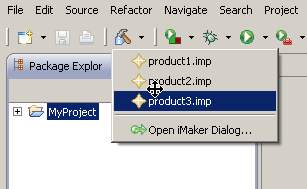
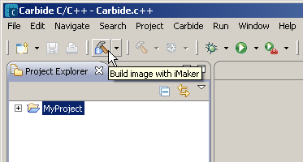

Preferences saved under the selected project will be shown in the toolbar pulldown menu of iMaker.
Select the preferences you want to use for creating the ROM image, as shown below. Image building will start immediately.
To build an image that has been built previously, click the Build image button on the toolbar.
